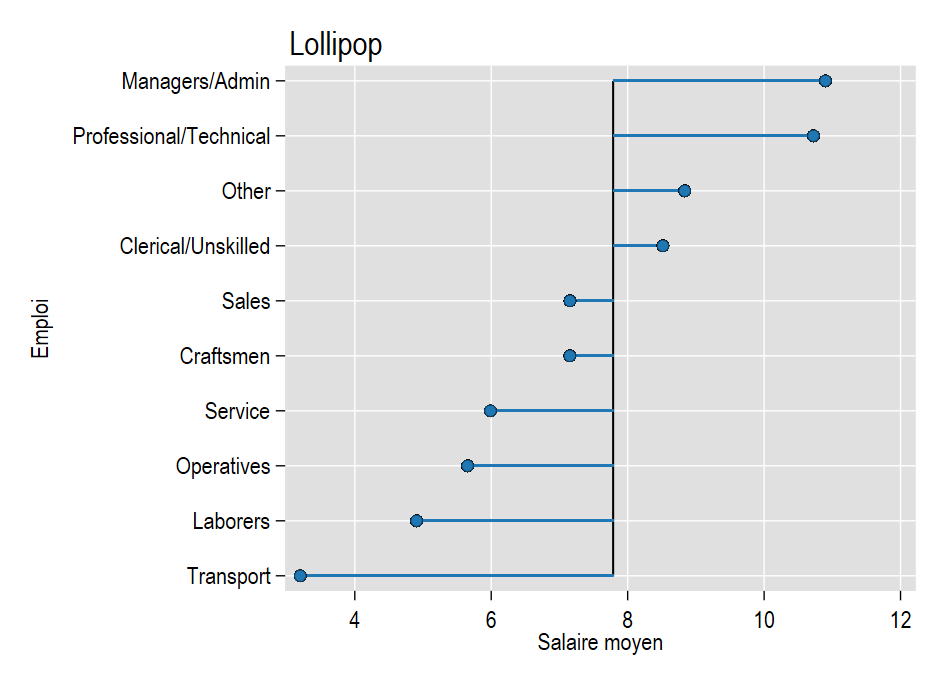

* ssc install egenmore
sysuse nlsw88, clear
drop if inlist(occupation,9,10,12)
egen mwage = mean(wage), by(occupation)
egen occ = axis(mwage occupation) , label(occupation)
twoway scatter occ mwage ///
|| dropline mwage occ, horizontal ///
|| , ylab(1/10, valuelabel angle(0)) legend(off)
drop mwage occ // utiliser des variables temporaires si possibleLollipop
programmation
barre
Lolliplot et haltère: pourquoi faire compliquer lorsque…..
J’étais complétement passé à côte de la fonction axis du package egenmore de Nj.Cox. Elle permet de construire un axe discret ordonné en récupérant automatiquement les labels d’une variable. Les programmes de la version 2000 pour générer des graphiques de types lollipop ou haltères, qui étaient particulièrement complexes et long se retouvent, et pas qu’un peu, extrêmement simplifiés:

Commande axis (NJ.Cox)
- Comme la fonction
group(egen), elle va créer une variable ordinale occ à partir des valeurs prises par une variable, ici mwage. - Elle va affecter les labels de la variable occupation à la variable ordinale.
J’en ai profité pour découvrir l’option labelvalue de x/ylabel() qui permet d’affecter directement les labels d’une variable catégorielle sur un axe [A documenter dans la formation].
Si on souhaite mettre comme valeur de base la moyenne des salaires moyens selon le groupe professionnel, on utilise simple l’option base() à laquelle on affecte la valeur moyenne des salaires récupérée en amont dans une macro:

qui sum mwage, d
local b = `r(mean)'
tw dropline mwage occ, horizontal mlc(black) mlw(*.2) base(`b') ///
|| , ylab(1/10, valuelabel angle(0)) legend(off) ///
xline(`b', noext lc(black)) title("Lollipop", pos(11)) ///
xtitle("Salaire moyen") ytitle("Emploi")[A venir]: les graphiques de type haltère. Il faudra passer par un collapse, mais le gain en terme de programmation est également non négligeable.